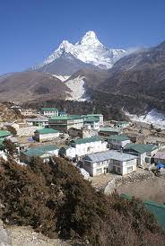
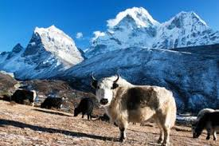

|  | Sagarmatha is one of the fourteen zones located in eastern Nepal. It includes mountain districts of the Himalayas (including Mount Everest) in the north, hill districts in the center, and valley districts of the Terai in the south. It is bordered by China to the north, India to the south, the Kosi Zone to the east and the Janakpur Zone to the west. |
| The main city of the Sagarmatha Zone is Rajbiraj which is also the headquarters. Other towns of the Sagarmatha hill area are Katari, Okhaldhunga, Diktel, Salleri and Namche Bazaar; while Kathauna, Lahan, Fatepur, Rajbiraj and Siraha are in the outer Terai. Triyuga is an emerging city in the zone. | |
|  |